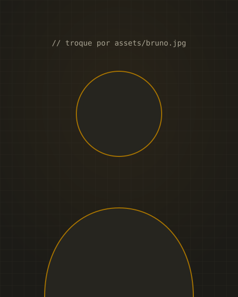

Sua empresa já tem os dados. A mAInframe coloca a IA para trabalhar com eles.
Criamos agentes, automações e análises sob medida para tirar o trabalho repetitivo do seu time e responder seus clientes mais rápido. Você conversa direto com quem constrói.

Bruno Favaro Simõesfundador, atende cada cliente pessoalmente
Isso acontece na sua empresa?
Marque o que for parecido com o seu dia a dia. Isso vai junto quando você pedir o diagnóstico.
Quero resolver issoProjetos
Cada projeto começa com um problema concreto e termina com um número que melhorou.
Projetos ilustrativos. Os cases reais entram aqui em breve.
Do primeiro papo ao sistema rodando
-
Diagnóstico gratuito
Uma conversa de 30 minutos sobre o seu processo. Você sai com pelo menos uma ideia aplicável, contratando ou não.
-
Proposta
Escopo, prazo e preço fechados por escrito, com o resultado que vamos medir.
-
Protótipo com seus dados
Você testa uma primeira versão de verdade antes do investimento maior.
-
Produção e acompanhamento
Integramos aos seus sistemas, treinamos o time e acompanhamos os números.
Quem faz: Bruno Favaro Simões
Sou o fundador da mAInframe e quem você vai encontrar em cada reunião. Venho da área de dados: trabalho como analista de dados, tenho MBA em Engenharia de Dados pela FIAP e uso Python e SQL todos os dias.
Criei a mAInframe porque vi muita empresa pagar caro por IA que ficou só na apresentação. Aqui o combinado é outro: um problema claro, um sistema que funciona e um número que melhora.
No Instagram eu mostro os bastidores dos projetos e explico IA sem complicação.
Dúvidas comuns
Quanto custa um projeto?
Depende do tamanho do problema. Depois do diagnóstico gratuito você recebe uma proposta com preço fechado. Muitos projetos começam por um piloto menor para provar o retorno antes de crescer.
Quanto tempo leva?
Um protótipo costuma ficar pronto em poucas semanas. O prazo exato vai por escrito na proposta.
Minha empresa é pequena. Faz sentido?
Faz. Empresas menores costumam sentir o ganho mais rápido, porque cada hora devolvida ao time pesa mais. O diagnóstico serve justamente para ver se compensa.
Preciso ter os dados organizados antes?
Não. Organizar os dados faz parte do trabalho quando necessário. Planilhas, e-mails e PDFs já são um bom ponto de partida.
E a segurança dos dados da minha empresa?
Seguimos a LGPD, assinamos acordo de confidencialidade quando você quiser e usamos só o acesso necessário para cada projeto.
Depois de pronto, quem cuida do sistema?
Entregamos documentado e treinamos sua equipe. Se preferir, seguimos com um plano de acompanhamento mensal.
Acompanhe no Instagram
Dicas de IA para empresas, bastidores dos projetos e o que está mudando no mercado, toda semana.
Abrir @mainframe.iaAgende seu diagnóstico gratuito
Conte o desafio em poucas linhas. Respondo em até 1 dia útil para marcar uma conversa de 30 minutos.
- Prefere direto? Mande uma DM no @mainframe.ia
- contato@mainframe.ia
- Chamar no WhatsApp